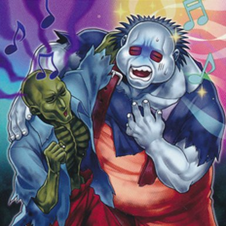

Efectos de cartas
Efecto Continuo
Este efecto sigue activo mientras la carta de Monstruo de Efecto se encuentre boca arriba en el Campo. El efecto comienza cuando el monstruo boca arriba aparece en el Campo y termina cuando ese monstruo se ha ido o no sigue boca arriba; no hay un disparador para su activación. Estos monstruos son más útiles si tenes alguna estrategia para protegerlos mientrs estén en el Campo.
Efecto de Encendido
Puedes usar este tipo de efectos tan solo declarando su activación durante tu Main Phase. Hay algunos Efectos de Encendido que tienen un coste de activación, como descartar cartas de tu mano, Sacrificar un monstruo, o pagar LP. Como puedes elegir cuando activar este tipo de efecto, es fácil crear combos con ellos.
Efecto Rápido
Estos son efectos de monstruo especiales que puedes activar aún durante el turno de tu adversario. Estos tipos de efectos tienen una Velocidad de Hechizo 2, aunque el resto de los efectos de monstruo tiene una Velocidad de Hechizo 1. Como es difícil para tu adversario predecir estas cartas, puedes darle una sorpresa.
Efecto Disparado
Estos efectos son activados en momentos específicos, como "Durante tu Standby Phase" o "cuando este monstruo es destruido". Estas cartas pueden funcionar bien en combos, pero para tu adversario es más fácil predecir que va a suceder, por lo que puede decidir intentar evitar que realices tu combo.
Efecto de Volteo
El efecto de Volteo es parte de los Efectos Disparados. Este es un efecto que se activa cuando una carta boca abajo se voltea boca arriba. Esto puede suceder cuando es Invocada por Volteo, cuando es atacada mientras está boca abajo o cuando es volteada boca arriba por el efecto de una carta. Estos efectos comienzan con la palabra "VOLTEO:" en la carta. Cuando tienes una Carta de Monstruo boca abajo, tu adversario debe ser precavido porque no sabe si esta carta tiene un efecto de Volteo o no.
Cartas de Monstruo de Péndulo
Las Cartas Monstruo de Péndulo son una clase de carta que hace borrosa la línea que separa a los Monstruos de las Cartas Mágicas. Pueden ser Invocadas como monstruos para atacar o defender, o puedes activarlas como Cartas Mágicas en tus Zonas de Péndulo para activar habilidades especiales extra, y te permite Invocar por Péndulo.
- Efecto de Péndulo
- Escala de Péndulo
- Efecto de Monstruo
Cuando juegas esta carta como una Carta Mágica en tu Zona de Péndulo, éste es su efecto. Algunas Cartas de Monstruo de Péndulo pueden no tener Efectos de Péndulo.
Es un número que determina qué monstruos puedes Invocar de Modo Especial durante una Invocación por Péndulo. El valor de la Escala de Péndulo de esta carta es 1.
Cuando juegas esta carta como una Carta de Monstruo común, éste es su efecto. Algunos Monstruos de Péndulo pueden no tener efectos de monstruo.
Monstruos Xyz
Los Monstruos Xyz son una poderosa clase de monstruo. Puedes Invocar un Monstruo Xyz en cualquier momento en que controles monstruos que sean del mismo Nivel. Los Monstruos Xyz comienzan en tu tu Deck Extra, no en tu Deck Pincipal, y esperan a que los llames a la acción.
Monstruos de Sincronía

Los Monstruos de Sincronía se colocan en el Deck Extra, separados del Deck Principal. Puedes Invocar de Modo Especial al Campo, en un instante, un poderoso Monstruo de Sincronía sólo utilizando los Niveles de tus monstruos. Pueden ser Invocados por Sincronía desde el Deck Extra mandando 1 monstruo Cantante boca arriba y cualquier número de monstruos que no sean Cantantes boca arriba y cualquier número de monstruos que no sean Cantantes boca arriba desde tu lado del Campo al Cementerio, siempre que la suma de todos sus Niveles sea exactamente igual al Nivel del Monstruo de Sincronía.
Monstruos Cantantes para Invocación por Sincronía
Para Invocar por Sincronía a un Monstruo de Sincronía, necesitas 1 monstruo Cantante (fijate que tenga "Cantante" al lado de su Tipo). El monstruo Cantante y otros monstruos boca arriba que utilices para la Invocación por Sincronía se llaman Materiales de Sincronía. La suma de sus Niveles es el Nivel del Monstruo de Sincronía que puedes Invocar.
Como Invocar por Sincronía
- Durante tu Main Phase, puedes declarar una Invocación por Sincronía cuando la suma total de los Niveles de un monstruo Cantante boca arriba que controles sea igual al Nivel del Monstruo de Sincronía que quieres Invocar por Sincronía.
- Después de comprobar el Nivel del Monstruo de Sincronía que quieres, manda al Cementerio, desde tu lado del Campo, a los Materiales de Sincronía boca arriba.
- Después de mandar los Materiales de Sincronía del Campo al Cementerio, toma el Monstruo de Sincronía de tu Deck Extra y ponlo en el Campo en Posición de Ataque boca arriba o Posición de Defensa boca arriba.
Monstruos de Fusión

Los Monstruos de Fusión también se colocan en el Deck Extra (no en el Deck Principal). Son Invocados utilizando los monstruos específicos nombrados en la carta (llamados Materiales de Fusión) combinados con una carta de Invocación como "Polimerización". Normalmente tienen habilidades especiales y Puntos de Ataque muy altos.
Como Invocar por Fusión
- Si tienes todos los Materiales de Fusión listados en la Carta Monstruo de Fusión, en los lugares especificados en tu carta de Invocación, puedes activar tu carta de Invocación colocándola en tu Zona de Magia y Trampas.
- Manda los Materiales de Fusión al Cementerio, y después toma el Monstruo de Fusión apropiado de tu Deck Extra y juégalo en el Campo ya sea en Posición de Ataque o Defensa boca arriba. Finalmente, coloca tu carta de Invocación en el Cementerio. (Si el efecto de otra carta hace que tus Materiales de Fusión sean mandados a otro lugar que no sea el Cementerio cuando tu carta de Invocación resuelve, mándalos a ese otro lugar, pero la Invocación por Fusión sucede igualmente).
- Recuerda que para utilizar un Monstruo de Fusión durante un Duelo necesita estar en tu Deck Extra. Como la Invocación por Fusión necesita cartas específicas, asegúrate de incluir esas cartas necesarias en tu Deck Principal.
Monstruos de Ritual
Son mosntruos especiales que son Invocados de Modo Especial con una Carta Mágica de Ritual específica, además de un Sacrificio requerido. Las Cartas de Monstruos de Ritual se colocan en el Deck Principal y no pueden ser Invocadas a menos que tengas todas las cartas apropiadas juntas en tu mano o en el Campo. Los Monstruos de Ritual generalmente tienen elevado ATK y DEF y algunos tienen habilidades especiales, al igual que los Monstruos de Fusión.
Como Invocar por Ritual
- Cuando tienes una Carta Mágica de Ritual además de la Carta de Monstruo de Ritual correspondiente en tu mano, y el Sacrificio requerido (listado en la Carta Mágica de Ritual), puedes activar la Carta Mágica de Ritual colocándola en la Zona de Magia y Trampas.
- Si la activación de la Carta Mágica de Ritual tiene éxito, Sacrifica los monstruos mandándolos de tu mano o el Campo al Cementerio. La Carta Mágica de Ritual te mostrará la cantidad necesaria que Sacrificar.
- Después de mandar al Cementerio los monstruos Sacrificados, juega la Carta de Monstruo de Ritual en el Campo en Posición de Ataque o Defensa boca arriba. Finalmente, coloca la Carta Mágica de Ritual en el Cementerio.
Cartas Mágicas Normales
Las Cartas Mágicas Normales tienen efectos de un solo uso. Para usar una Carta Mágica Normal, anuncia su activación a tu adversario, poniéndola en el Campo. Si la activación tiene éxito, resuelve el efecto escrito en la carta. La carta es destruida después de resolver el efecto y es mandada al Cementerio.
Cartas Mágicas de Ritual
Estas Cartas Mágicas se esan para realizar Invocaciones por Ritual. Usa estas cartas de la misma manera en que usarías una Carta Mágica Normal.
Cartas Mágicas Continuas
Estas cartas permanecen en el Campo una vez que han sido activadas, y su efecto continúa mientras la carta permanezca boca arriba en el Campo. Usando Cartas Mágias Continuas puedes crear efectos positivos duraderos con una sola carta, algo muy beneficioso; pero existe la posibilidad de que el adversario cause que sea retirada del juego antes de que te beneficies del efecto.
Cartas Mágicas de Equipo
Estas cartas dan un efecto extra a 1 monstruo boca arriba a tu elección (tuyo o de tu adversario, dependiendo de la carta). Permanecen en el Campo después de hacer sido activadas. La Carta Mágica de Equipo afecta solo a 1 monstruo (llamado el monstruo equipado), pero sigue ocupando un espacio en tu zona de Magica y Trampas. Si es posible, colócala en la zona directamente atrás del monstruo equipado como recordatorio. Si el monstruo es destruido, volteado boca abajo o retirado del juego, sus Cartas de Equipo son destruidas.
Cartas Mágicas de Campo
Estas cartas van en tu Zona del Campo y permanecen ahí. Cada jugador puede tener 1 Carta Mágica de Campo en su lado del Campo. Para usar otra Carta Mágica de Campo, manda al Cementerio a la que tenías previamente. Muchos efectos de Cartas Mágicas de Campo se aplican a AMBOS jugadores. Estas cartas pueden ser puestas boca abajo en la Zona del Campo, pero no se activan hasta que son volteadas boca arriba.
Cartas Mágicas de Juego Rápido
Estas son Cartas Mágicas especiales que pueden ser activadas en cualquier Phase de tu turno, no solamente durante tu Main Phase. También puedes activarlas durante el turno de tu adversario si es que has Colocado la carta boca abajo previamente, pero recuerda que no puedes activar una carta en el mismo turno en que la Colocaste.
Cartas de Trampa Normales
Antes de que puedas activar una Carta de Trampa debes primero Colocarla en el Campo. No puedes activar la Trampa en el mismo turno en la que la Colocaste, pero puedes activarla en cualquier momento después, comenzando desde el principio del próximo turno. Las Cartas de Trampa Normales tienen efectos de un solo uso y una vez que estos han sido resueltos serán mandadas al Cementerio, tal y como las Cartas Mágicas Normales. Son similares a las Cartas Mágicas Normales también porque una vez que las activas sus efectos tienen poca probabilidad de ser detenidas. Sim embargo, tu adversario puede destruir tus Cartas de Trampas boca abajo en el turno en que fueron Colocadas, o antes de que sea el momento apropiado para activarlas. Por esta razón debes ser prudente en el modo de usar tus Cartas de Trampa.

Cartas de Trampa Continuas
Como las Cartas Mágicas Continuas, las cartas de Trampa Continuas se quedan en el Campo una vez activadas y los efectos continúan mientras estén boca arriba en el Campo. Algunas Cartas de Trampa Continuas tienen habilidades similares a los Efectos de Encendido o de Disparo que pueden ser encontrados en las Cartas de Monstruos de Efecto. Las Cartas de Trampa Continuas pueden tener efectos que limiten las opciones de tu adversario, o que lentamente dañen sus LP.
Cartas de Trampa de Contraefecto
Estas Cartas de Trampa son activadas generalmente en respuesta a la activación de otras cartas, y pueden tener habilidades como negar los efectos de esas cartas. Estos tipos de Trampa son efectivas contra Cartas Mágicas Normales o Cartas de Trampa Normales, que de otra manera son difíciles de detener. Sin embargo, muchas Cartas de Trampa de Contraefecto requieren un coste para ser activadas.